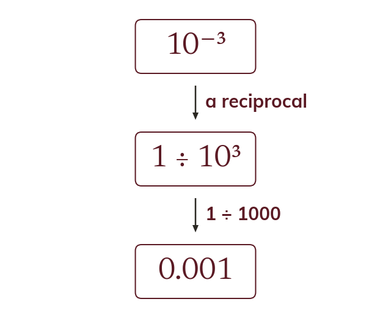

Negative indices
A negative index is a reciprocal: 10⁻ⁿ = 110ⁿ. It shifts the digits right, not left. The value stays positive.
A negative index is a reciprocal: 10⁻ⁿ means 110ⁿ, so multiplying by it divides and shifts every digit n places to the right. The value stays positive, and A still sits between 1 and 10 whatever the sign of the index.